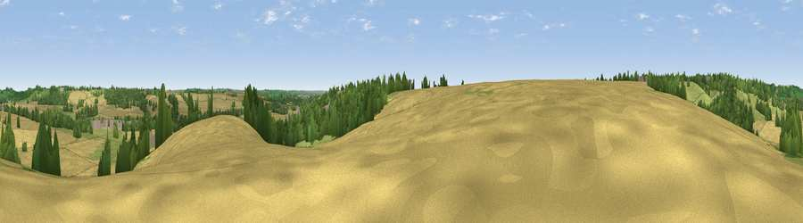

Viewpoint near Shotteswell
#33524 in England · top 67% of its area beats it · near Shotteswell · access?Where it is
The exact computed spot (SP 42225 46175). Click the marker for map links.
Public access: no public right of way or access land is recorded at this exact spot — it may be on private land. Computed from Natural England's CRoW access layer and OpenStreetMap rights of way — not the legal definitive map. Always verify locally.
The view, rendered

A 360° render of this exact spot computed from the terrain model, tree cover and land cover — summer colours, afternoon light, calibrated against photographs of famous viewpoints. Real trees, hedges and buildings will differ in detail.
The panorama
Grey silhouette: terrain skyline in each direction (720 bearings, Earth curvature and refraction included). Dashed green: skyline with trees (+15 m) and buildings (+8 m) as obstacles. Blue strip: how far the ground is visible on each bearing.
Where the view opens
Wedge length = distance to the farthest visible ground on that bearing (vegetation-aware). Rings at 10, 25 and 50 km.
What fills the view
56% cropland · 25% grassland · 18% woodland · 2% built-up
Angular shares of the visible panorama (visual magnitude), not map area. Landscape diversity 0.46 (0–1 Shannon).
Key numbers
More beautiful places nearby
The staircase of upgrades: each row has a higher view potential than everything closer. Driving times are estimates from straight-line distance, calibrated against real road routing — check an actual route before setting out.
| Place | Direction | Drive | Score |
|---|---|---|---|
| Viewpoint near Farnborough | NNW · 4 km | ~9 min | 56.1 |
| Viewpoint near Radway | WNW · 5 km | ~10 min | 71.7 |
| Viewpoint near Ilmington | W · 22 km | ~36 min | 72.6 |
| Viewpoint near Meon Vale | W · 25 km | ~40 min | 77.0 |
| Broadway Hill | WSW · 32 km | ~50 min | 77.7 |
| Viewpoint near Elmley Castle | W · 45 km | ~65 min | 80.5 |
| Bredon Hill | W · 47 km | ~67 min | 83.0 |
| North Hill | W · 65 km | ~88 min | 86.8 |
52.11229, -1.38481 · source: screening · position refined by local search. Computed location — check access rights before visiting.